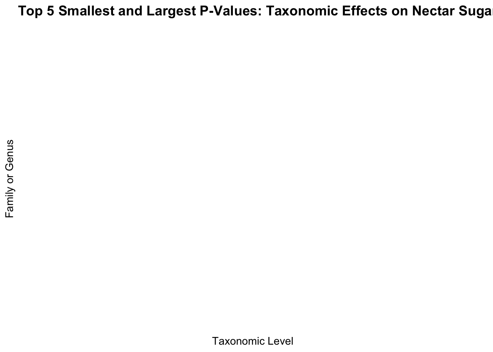
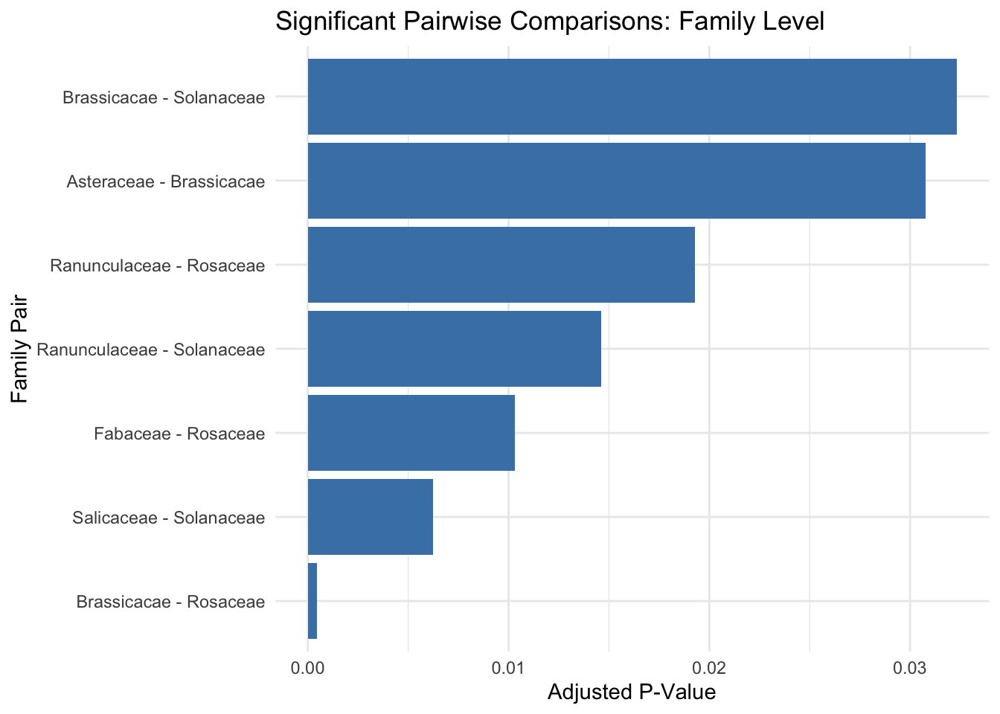
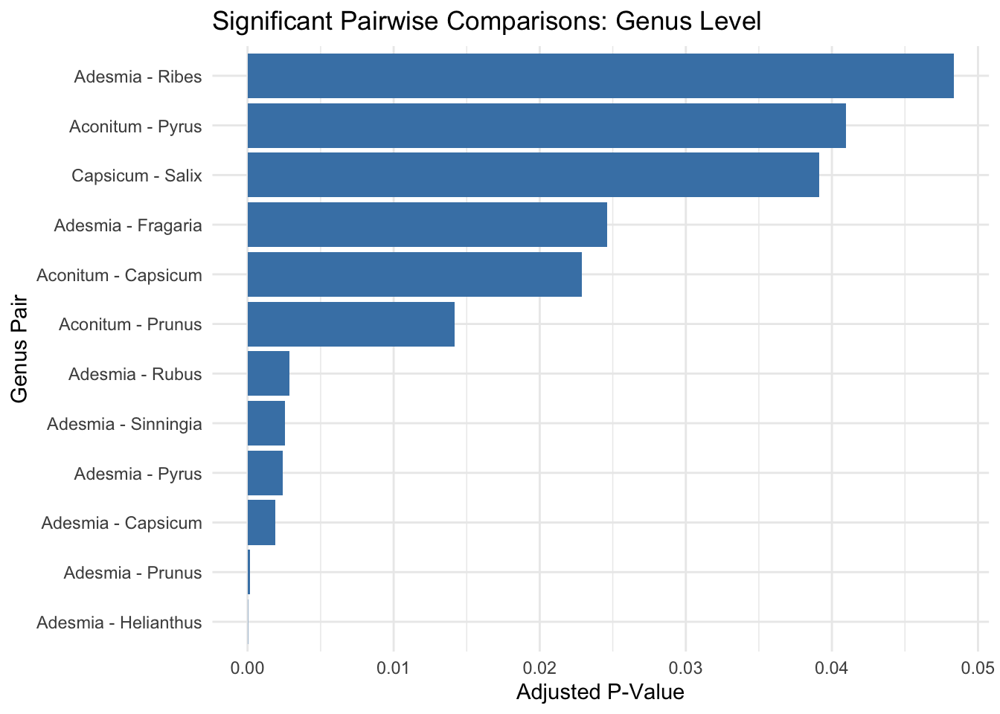
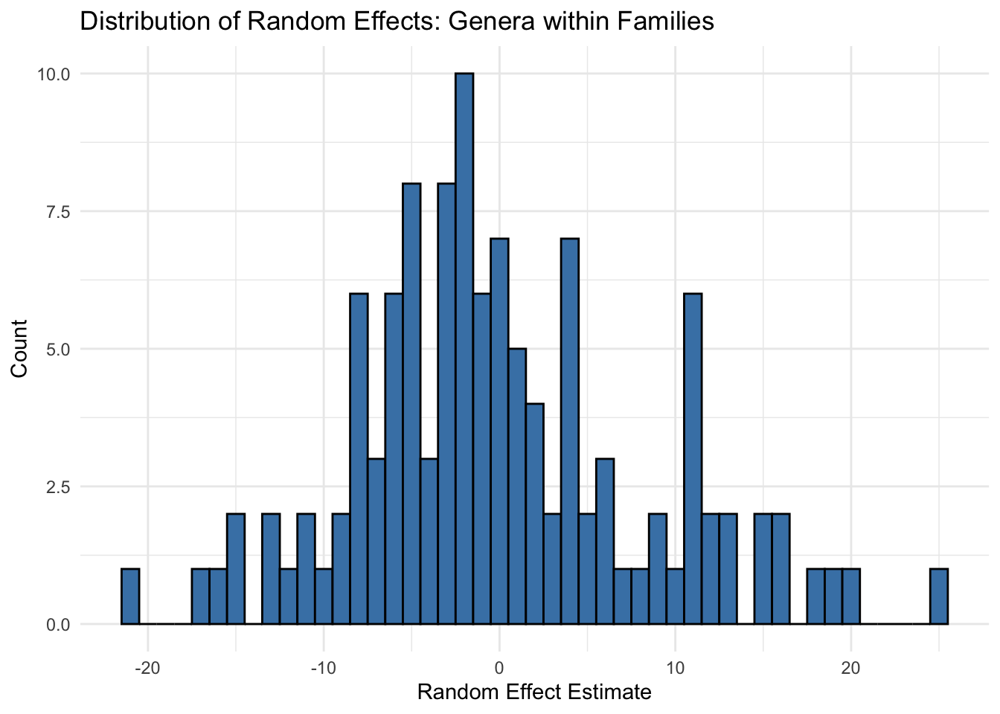
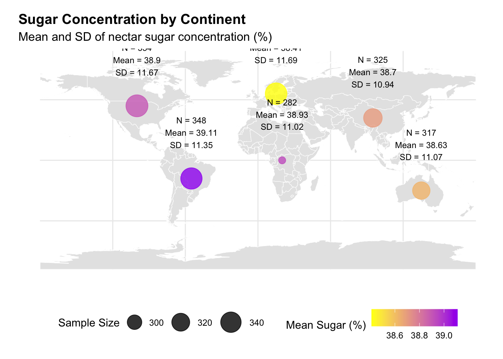
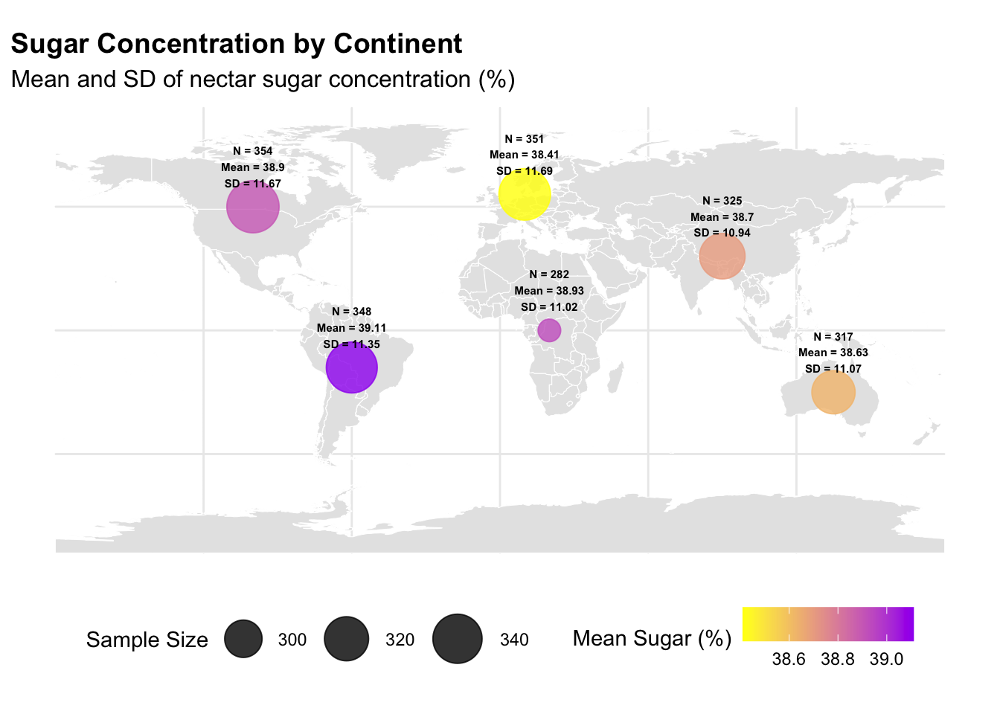
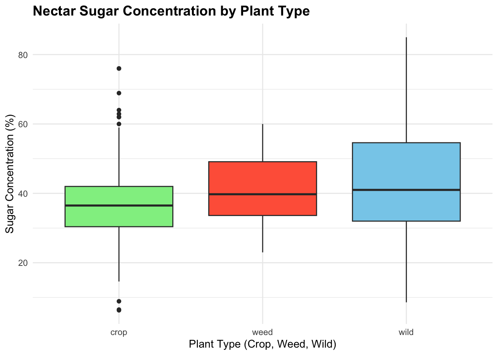

Analysis of the data set from the project “The nectar report: quantitative review of nectar sugar concentrations offered by bee visited flowers in agricultural and non-agricultural landscapes”
2. Team Members Names
Jorge Alberto Espejel Padilla
Mehedi Shariff
Amala Thomas
Ei Mon Than
3. Introduction
Introduction
Nectar is a critical resource in plant-pollinator interactions, influencing pollinator behavior, visitation rates, and plant reproductive success. Its sugar composition—primarily sucrose, glucose, and fructose—serves as a key determinant of nectar quality and pollinator preference (Nicolson & Thornburg, 2007). Variations in nectar sugar concentration have been linked to ecological, evolutionary, and environmental factors, including plant taxonomy, geographical region, and climate conditions (Pacini & Nepi, 2007; Ornelas et al., 2019). Understanding these variations is crucial for elucidating the role of nectar traits in shaping plant-pollinator dynamics.Taxonomy plays a significant role in determining nectar composition. Differences in sugar ratios have been observed at both the family and genus levels, with phylogenetic constraints often influencing nectar traits (Perret et al., 2001; Chalcoff et al., 2006). For example, hummingbird-pollinated flowers tend to produce sucrose-dominant nectars, while bee-pollinated flowers show balanced sugar proportions (Rodríguez-Gironés & Santamaría, 2004; Nicolson & Thornburg, 2007). These variations highlight evolutionary adaptations to pollinator syndromes. In addition to taxonomy, geographic factors contribute to variability in nectar traits. Nectar sugar concentration has been shown to vary across regions, likely as a response to climatic factors such as temperature, rainfall, and latitude (Pacini & Nepi, 2007; Stiles & Freeman, 1993). For instance, studies in temperate and tropical regions have reported regional differences in nectar sugar concentration, influenced by both plant phylogeny and environmental conditions (Petanidou, 2005; Chalcoff et al., 2006). These findings underscore the interplay between evolutionary processes and environmental pressures in shaping nectar characteristics globally. Recent work, such as Ornelas et al. (2019), has revealed significant variation in nectar sugar concentration across families, genera, and continents, reflecting both fixed effects (taxonomic constraints) and random effects (environmental variability). Identifying these patterns is essential for understanding how nectar traits evolve and adapt in different ecological and climatic contexts. This study aims to analyze the variability in nectar sugar concentration across taxonomic levels and geographical regions. Specifically, we investigate: (1) differences in mean nectar sugar concentration between continents, (2) significant pairwise comparisons at family and genus levels, and (3) the distribution of random effects within taxonomic families. By addressing these objectives, the study contributes to a broader understanding of how nectar traits influence pollination ecology in a changing global environment.
4. Objectives and Hypotheses
Objectives
Primary Objective:
To investigate the relationships between plant taxonomy (e.g., family, genus), geography and nectar sugar concentration.
Secondary Objective
To analyze sugar concentration variability within high-performing families and identify key genera.
Hypotheses
Primary Hypothesis:
H₀ (Null Hypothesis): There is no significant relationship between plant taxonomy (family, genus) and nectar sugar concentration.
# Install required packages if not already installedif (!require(dplyr)) install.packages("dplyr")if (!require(tidyr)) install.packages("tidyr")if (!require(ggplot2)) install.packages("ggplot2")# Load necessary librarieslibrary(dplyr)library(tidyr)library(ggplot2)# Ensure sugar concentration is numeric and missing data is handledbee_data <- bee_data %>%filter(!is.na(Family), !is.na(Genus), !is.na(sugar_concentration)) %>%mutate(sugar_concentration =as.numeric(sugar_concentration))# Perform Kruskal-Wallis test for nectar sugar concentration by Familykw_family_taxonomy <- bee_data %>%group_by(Family) %>%summarise(p_value =tryCatch(kruskal.test(sugar_concentration ~ Family, data = bee_data)$p.value,error =function(e) NA# Handle errors by assigning NA ) ) %>%filter(!is.na(p_value)) # Remove rows with NA p-values# Perform Kruskal-Wallis test for nectar sugar concentration by Genuskw_genus_taxonomy <- bee_data %>%group_by(Genus) %>%summarise(p_value =tryCatch(kruskal.test(sugar_concentration ~ Genus, data = bee_data)$p.value,error =function(e) NA# Handle errors by assigning NA ) ) %>%filter(!is.na(p_value)) # Remove rows with NA p-values# Combine Family and Genus resultskw_taxonomy_results <-bind_rows( kw_family_taxonomy %>%mutate(Level ="Family"), kw_genus_taxonomy %>%mutate(Level ="Genus"))# Ensure unique identifiers for visualizationkw_taxonomy_results <- kw_taxonomy_results %>%mutate(Identifier =ifelse(Level =="Family", paste(Family, "Family"), paste(Genus, "Genus")) )# Filter top 5 smallest and largest p-values dynamicallykw_taxonomy_filtered <- kw_taxonomy_results %>%arrange(p_value) %>%slice(c(1:5, (n() -4):n())) # Select top 5 smallest and largest p-values# Ensure there are results to plotif (nrow(kw_taxonomy_filtered) >0) {# Create the heatmap for taxonomic effectsggplot(kw_taxonomy_filtered, aes(x = Level, y = Identifier, fill = p_value)) +geom_tile(color ="white") +scale_fill_gradient(low ="blue", high ="red", name ="p-value", na.value ="gray") +labs(title ="Top 5 Smallest and Largest P-Values: Taxonomic Effects on Nectar Sugar Concentration",x ="Taxonomic Level",y ="Family or Genus" ) +theme_minimal() +theme(axis.text.x =element_text(angle =45, hjust =1),plot.title =element_text(size =14, face ="bold") )} else {message("No significant results to display.")}

2. Perform Dunn’s Post-Hoc Test using the dunnTest function from the FSA package.
Apply the test to both families and genera to identify pairwise differences.
Adjust the p-values for multiple comparisons using the Bonferroni correction.
Visualize the results in a clear way (e.g., a barplot or table) to highlight significant pairwise differences.
# Install required packages if not already installedif (!require(dplyr)) install.packages("dplyr")if (!require(tidyr)) install.packages("tidyr")if (!require(ggplot2)) install.packages("ggplot2")if (!require(FSA)) install.packages("FSA")if (!require(ggpubr)) install.packages("ggpubr")# Load necessary librarieslibrary(dplyr)library(tidyr)library(ggplot2)library(FSA)library(ggpubr)# Set working directory (adjust as needed)setwd("~/Desktop/NECTAR-PROJECT")# Load the datasetbee_data <-read.csv("cleaned_bee_nectar_data.csv", stringsAsFactors =FALSE)# Perform Dunn's Test for Pairwise Comparisons at the Family Leveldunn_family <-dunnTest(sugar_concentration ~ Family, data = bee_data, method ="bonferroni")dunn_family_results <- dunn_family$res# Check column names of the Dunn test resultsprint(names(dunn_family_results)) # Debugging step to confirm column names
[1] "Comparison" "Z" "P.unadj" "P.adj"
# Extract significant comparisons for Family levelsignificant_family <- dunn_family_results %>%mutate(comparison = Comparison # Use 'Comparison' column directly ) %>%filter(P.adj <0.05) %>%arrange(P.adj)print("Significant Pairwise Comparisons Between Families:")
[1] "Significant Pairwise Comparisons Between Families:"
# Perform Dunn's Test for Pairwise Comparisons at the Genus Leveldunn_genus <-dunnTest(sugar_concentration ~ Genus, data = bee_data, method ="bonferroni")dunn_genus_results <- dunn_genus$res# Extract significant comparisons for Genus levelsignificant_genus <- dunn_genus_results %>%mutate(comparison = Comparison # Use 'Comparison' column directly ) %>%filter(P.adj <0.05) %>%arrange(P.adj)print("Significant Pairwise Comparisons Between Genera:")
[1] "Significant Pairwise Comparisons Between Genera:"
# Visualize Results: Top Significant Comparisons at Family Levelggplot(significant_family, aes(x =reorder(comparison, P.adj), y = P.adj)) +geom_bar(stat ="identity", fill ="steelblue") +coord_flip() +labs(title ="Significant Pairwise Comparisons: Family Level",x ="Family Pair",y ="Adjusted P-Value" ) +theme_minimal()

# Visualize Results: Top Significant Comparisons at Genus Levelggplot(significant_genus, aes(x =reorder(comparison, P.adj), y = P.adj)) +geom_bar(stat ="identity", fill ="steelblue") +coord_flip() +labs(title ="Significant Pairwise Comparisons: Genus Level",x ="Genus Pair",y ="Adjusted P-Value" ) +theme_minimal()

3. Linear Mixed-Effects Model
Use the lme4 package to fit the mixed-effects model.
Incorporate the nested structure (genus within family) as random effects.
Examine the fixed effects (overall patterns) and random effects (family and genus-specific variability).
Visualize the model results for clarity.
# Install required packages if not already installedif (!require(dplyr)) install.packages("dplyr")if (!require(lme4)) install.packages("lme4")if (!require(ggplot2)) install.packages("ggplot2")if (!require(sjPlot)) install.packages("sjPlot") # For visualization of mixed-effects modelsif (!require(forcats)) install.packages("forcats") # For data reordering# Load necessary librarieslibrary(dplyr)library(lme4)library(ggplot2)library(sjPlot)library(forcats)# Load the data (assuming cleaned_bee_nectar_data.csv)setwd("~/Desktop/NECTAR-PROJECT") # Set your working directorybee_data <-read.csv("cleaned_bee_nectar_data.csv", stringsAsFactors =FALSE)# Convert necessary columns to factorsbee_data$Family <-as.factor(bee_data$Family)bee_data$Genus <-as.factor(bee_data$Genus)# Remove rows with missing sugar concentrationbee_data <- bee_data %>%filter(!is.na(sugar_concentration))# -------------------------------# Fit the Linear Mixed-Effects Model# -------------------------------# Model: Sugar concentration ~ (1 | Family/Genus) for random effectslmm_model <-lmer(sugar_concentration ~1+ (1| Family/Genus), data = bee_data)# View the summary of the modelsummary(lmm_model)
Linear mixed model fit by REML ['lmerMod']
Formula: sugar_concentration ~ 1 + (1 | Family/Genus)
Data: bee_data
REML criterion at convergence: 3348.3
Scaled residuals:
Min 1Q Median 3Q Max
-2.3270 -0.6219 -0.1030 0.4343 3.2359
Random effects:
Groups Name Variance Std.Dev.
Genus:Family (Intercept) 108.685 10.425
Family (Intercept) 4.803 2.192
Residual 78.458 8.858
Number of obs: 444, groups: Genus:Family, 116; Family, 45
Fixed effects:
Estimate Std. Error t value
(Intercept) 40.94 1.28 31.98
# -------------------------------# Extract and Filter Random Effects# -------------------------------# Extract random effects (Genus within Family)random_effects <-ranef(lmm_model)$`Genus:Family`random_effects_df <-as.data.frame(random_effects)colnames(random_effects_df) <-c("Random_Effect") # Rename the random effects column# Add Genus:Family identifiers for clarityrandom_effects_df$Genus_Family <-rownames(random_effects)# Split Family and Genus into separate columnsrandom_effects_df <- random_effects_df %>%separate(Genus_Family, into =c("Family", "Genus"), sep =":")# Arrange and select the top 10 and bottom 10 random effectsrandom_effects_filtered <- random_effects_df %>%arrange(desc(abs(Random_Effect))) %>%# Sort by absolute valueslice(c(1:10, (n() -9):n())) # Select top 10 and bottom 10# -------------------------------# Visualize Random Effects# -------------------------------# 1. Histogram of Random Effectsggplot(random_effects_df, aes(x = Random_Effect)) +geom_histogram(binwidth =1, fill ="steelblue", color ="black") +labs(title ="Distribution of Random Effects: Genera within Families",x ="Random Effect Estimate",y ="Count" ) +theme_minimal()

# 2. Barplot for Top/Bottom 10 Random Effectsggplot(random_effects_filtered, aes(x =fct_reorder(Genus, Random_Effect), y = Random_Effect, fill = Family)) +geom_bar(stat ="identity", color ="black") +coord_flip() +labs(title ="Top and Bottom 10 Random Effects Estimates",x ="Genus (Family)",y ="Random Effect Estimate",fill ="Family" ) +theme_minimal() +theme(axis.text.y =element_text(size =8))
23. Geographical Impact
Objective:
• Test whether nectar sugar concentrations vary significantly across geographical regions.
Analyses:
1. Kruskal-Wallis or ANOVA:
◦ Compare sugar concentrations across continents or hemispheres.
# Install required packages if not already installedif (!require(dplyr)) install.packages("dplyr")if (!require(ggplot2)) install.packages("ggplot2")if (!require(tidyr)) install.packages("tidyr")if (!require(ggpubr)) install.packages("ggpubr") # For normality testsif (!require(car)) install.packages("car") # For ANOVA assumptionsif (!require(FSA)) install.packages("FSA") # For Kruskal-Wallis post-hoc tests# Load necessary librarieslibrary(dplyr)library(ggplot2)library(tidyr)library(ggpubr)library(car)library(FSA)# -------------------------------# Data Preparation# -------------------------------# Load datasetwd("~/Desktop/NECTAR-PROJECT") # Set your working directorybee_data <-read.csv("cleaned_bee_nectar_data.csv", stringsAsFactors =FALSE)# Convert geographical regions into factorsbee_data_long <- bee_data %>%gather(key ="Region", value ="Presence", europe:australia) %>%filter(Presence =="yes") %>%# Keep only relevant rowsmutate(Region =factor(Region)) # Convert Region to factor# Check the structure of the datastr(bee_data_long)
'data.frame': 1977 obs. of 12 variables:
$ number : int 1 2 3 4 5 6 7 8 9 10 ...
$ Family : chr "Rosaceae" "Brassicacae" "Brassicacae" "Rosaceae" ...
$ Genus : chr "Malus" "Raphanus" "Brassica" "Rubus" ...
$ species : chr "domestica" "raphanistrum" "sp" "idaeus" ...
$ sci_name : chr "Malus sp." "Raphanus raphanistrum" "Brassica sp" "Rubus idaeus" ...
$ variant : chr "" "" "" "" ...
$ sugar_concentration: num 42 40 39 37 34 34 33 31 30 28 ...
$ type : chr "crop" "weed" "crop" "crop" ...
$ reference : chr "Butler, C. G. (1945). The influence of various physical and biological factors of the environment on honeybee a"| __truncated__ "Butler, C. G. (1945). The influence of various physical and biological factors of the environment on honeybee a"| __truncated__ "Butler, C. G. (1945). The influence of various physical and biological factors of the environment on honeybee a"| __truncated__ "Butler, C. G. (1945). The influence of various physical and biological factors of the environment on honeybee a"| __truncated__ ...
$ notes : chr "" "" "" "" ...
$ Region : Factor w/ 6 levels "africa","asia",..: 4 4 4 4 4 4 4 4 4 4 ...
$ Presence : chr "yes" "yes" "yes" "yes" ...
# -------------------------------# Normality Check (Shapiro-Wilk)# -------------------------------# Test for normality of sugar concentrationshapiro_test <-shapiro.test(bee_data_long$sugar_concentration)print(shapiro_test)
Shapiro-Wilk normality test
data: bee_data_long$sugar_concentration
W = 0.96827, p-value < 2.2e-16
# -------------------------------# Select Appropriate Test: ANOVA or Kruskal-Wallis# -------------------------------if (shapiro_test$p.value >0.05) {cat("Data is approximately normal. Proceeding with ANOVA...\n")# ANOVA: Compare sugar concentration across Regions anova_result <-aov(sugar_concentration ~ Region, data = bee_data_long)print(summary(anova_result))# Tukey's Post-Hoc Test tukey_result <-TukeyHSD(anova_result)print(tukey_result)# Visualization: Boxplot for ANOVAggplot(bee_data_long, aes(x = Region, y = sugar_concentration, fill = Region)) +geom_boxplot() +labs(title ="Nectar Sugar Concentration Across Geographical Regions",x ="Region",y ="Sugar Concentration (%)" ) +theme_minimal() +theme(axis.text.x =element_text(angle =45, hjust =1))} else {cat("Data is not normal. Proceeding with Kruskal-Wallis test...\n")# Kruskal-Wallis Test kruskal_result <-kruskal.test(sugar_concentration ~ Region, data = bee_data_long)print(kruskal_result)# Pairwise Dunn's Test for Post-Hoc Comparisons dunn_result <-dunnTest(sugar_concentration ~ Region, data = bee_data_long, method ="bonferroni")print(dunn_result)# Visualization: Boxplot for Kruskal-Wallisggplot(bee_data_long, aes(x = Region, y = sugar_concentration, fill = Region)) +geom_boxplot() +labs(title ="Nectar Sugar Concentration Across Geographical Regions",x ="Region",y ="Sugar Concentration (%)" ) +theme_minimal() +theme(axis.text.x =element_text(angle =45, hjust =1))}
Data is not normal. Proceeding with Kruskal-Wallis test...
Kruskal-Wallis rank sum test
data: sugar_concentration by Region
Kruskal-Wallis chi-squared = 1.0451, df = 5, p-value = 0.9588
Comparison Z P.unadj P.adj
1 africa - asia 0.20717119 0.8358762 1
2 africa - australia 0.28897620 0.7725996 1
3 asia - australia 0.08607713 0.9314051 1
4 africa - europe 0.61516139 0.5384481 1
5 asia - europe 0.42003203 0.6744621 1
6 australia - europe 0.32961098 0.7416939 1
7 africa - north_america -0.02853842 0.9772327 1
8 asia - north_america -0.24911640 0.8032707 1
9 australia - north_america -0.33536627 0.7373488 1
10 europe - north_america -0.68333139 0.4943975 1
11 africa - south_america -0.27219087 0.7854753 1
12 asia - south_america -0.50128328 0.6161718 1
13 australia - south_america -0.58556120 0.5581704 1
14 europe - south_america -0.93859856 0.3479369 1
15 north_america - south_america -0.25872766 0.7958454 1
2. Geospatial Mapping:
◦ Use heatmaps on a world map to visualize geographic patterns in
sugar concentration.
if (!require(dplyr)) install.packages("dplyr")if (!require(ggplot2)) install.packages("ggplot2")if (!require(tidyr)) install.packages("tidyr")if (!require(sf)) install.packages("sf")if (!require(rnaturalearth)) install.packages("rnaturalearth")if (!require(rnaturalearthdata)) install.packages("rnaturalearthdata")if (!require(viridis)) install.packages("viridis")# Load librarieslibrary(dplyr)library(ggplot2)library(tidyr)library(sf)library(rnaturalearth)library(rnaturalearthdata)library(viridis)# -------------------------------# Data Preparation# Check unique values in region columns (assuming presence columns)bee_data %>%select(africa, asia, australia, europe, north_america, south_america) %>%summarise_all(~unique(.))
africa asia australia europe north_america south_america
1 yes yes yes yes yes yes
2
# Reshape the dataset to long formatbee_data_long <- bee_data %>%gather(key ="Region", value ="Presence", africa, asia, australia, europe, north_america, south_america) %>%filter(Presence =="yes"&!is.na(sugar_concentration)) # Only "yes" and non-NA sugar concentrations# Calculate Mean, SD, and N for each regioncontinent_summary <- bee_data_long %>%group_by(Region) %>%summarise(Mean =round(mean(sugar_concentration, na.rm =TRUE), 2),SD =round(sd(sugar_concentration, na.rm =TRUE), 2),N =n() ) %>%filter(N >0) # Filter regions with at least one valid sample# Print the resultsprint(continent_summary)
# A tibble: 6 × 4
Region Mean SD N
<chr> <dbl> <dbl> <int>
1 africa 38.9 11.0 282
2 asia 38.7 10.9 325
3 australia 38.6 11.1 317
4 europe 38.4 11.7 351
5 north_america 38.9 11.7 354
6 south_america 39.1 11.4 348
# World map dataworld <-ne_countries(scale ="medium", returnclass ="sf")# Assume `continent_summary` has Mean, SD, and N for each region# The coordinates for each continent should be pre-defined (example coordinates below)continent_summary <-data.frame(Region =c("africa", "asia", "australia", "europe", "north_america", "south_america"),Mean =c(38.93, 38.70, 38.63, 38.41, 38.90, 39.11),SD =c(11.02, 10.94, 11.07, 11.69, 11.67, 11.35),N =c(282, 325, 317, 351, 354, 348),lon =c(20, 90, 135, 10, -100, -60), # Longitude for continent centerslat =c(0, 30, -25, 55, 50, -15) # Latitude for continent centers)# Load world mapworld <-ne_countries(scale ="medium", returnclass ="sf")# Data frame with coordinates, means, SD, and sample sizescontinent_summary <-data.frame(Region =c("africa", "asia", "australia", "europe", "north_america", "south_america"),Mean =c(38.93, 38.70, 38.63, 38.41, 38.90, 39.11),SD =c(11.02, 10.94, 11.07, 11.69, 11.67, 11.35),N =c(282, 325, 317, 351, 354, 348),lon =c(20, 90, 135, 10, -100, -60), # Longitude for continent centerslat =c(0, 30, -25, 55, 50, -15) # Latitude for continent centers)# Adjust position slightly upwards for textcontinent_summary <- continent_summary %>%mutate(text_lat = lat +8) # Move text up by 8 latitude units# Plot the map with aligned text above each continentggplot() +# Base world mapgeom_sf(data = world, fill ="grey90", color ="white") +# Points on the map for each continentgeom_point(data = continent_summary, aes(x = lon, y = lat, size = N, color = Mean), alpha =0.8) +scale_color_gradient(low ="yellow", high ="purple", name ="Mean Sugar (%)") +scale_size(range =c(5, 12), name ="Sample Size") +# Add text with N, Mean, and SD above the pointsgeom_text(data = continent_summary, aes(x = lon, y = text_lat, label =paste0("N = ", N, "\nMean = ", Mean, "\nSD = ", SD)),size =2, hjust =0.5, vjust =0, fontface ="bold") +# Titles and themelabs(title ="Sugar Concentration by Continent",subtitle ="Mean and SD of nectar sugar concentration (%)" ) +theme_minimal() +theme(legend.position ="bottom",plot.title =element_text(face ="bold", size =14),plot.subtitle =element_text(size =12),axis.text =element_blank(),axis.ticks =element_blank(),axis.title =element_blank() )

34. Ecological Effects (Crops vs. Weeds)
Objective:
• Evaluate whether plant type (crop vs. weed) affects nectar sugar concentration.
1. Boxplots by Type:
◦ Compare sugar concentration between crops and weeds visually.
2. T-Test or Wilcoxon Test:
◦ Test for significant differences between crops and weeds.
Analyses:
# -----------------------------# 1. Boxplot: Compare sugar concentration across types# -----------------------------# Filter out rows where 'type' is blank or NAbee_data <- bee_data %>%filter(!is.na(type) & type !="")ggplot(bee_data, aes(x = type, y = sugar_concentration, fill = type)) +geom_boxplot() +labs(title ="Nectar Sugar Concentration by Plant Type",x ="Plant Type (Crop, Weed, Wild)",y ="Sugar Concentration (%)" ) +scale_fill_manual(values =c("crop"="lightgreen", "weed"="tomato", "wild"="skyblue")) +theme_minimal() +theme(plot.title =element_text(face ="bold", size =14),legend.position ="none" )

# -----------------------------# 2. Kruskal-Wallis Test: Test for differences among the three groups# -----------------------------kruskal_result <-kruskal.test(sugar_concentration ~ type, data = bee_data)# Print Kruskal-Wallis resultscat("\nKruskal-Wallis Test Results:\n")
Kruskal-Wallis Test Results:
print(kruskal_result)
Kruskal-Wallis rank sum test
data: sugar_concentration by type
Kruskal-Wallis chi-squared = 15.78, df = 2, p-value = 0.0003745
# -----------------------------# 3. Dunn's Post-Hoc Test: Pairwise comparisons if Kruskal-Wallis is significant# -----------------------------if (kruskal_result$p.value <0.05) { dunn_result <-dunnTest(sugar_concentration ~ type, data = bee_data, method ="bonferroni")# Format the results for better display dunn_result_df <- dunn_result$res dunn_result_df <- dunn_result_df %>%mutate(Significance =ifelse(P.adj <0.05, "Significant", "Not Significant"))# Print pairwise resultscat("\nDunn's Post-Hoc Test Results (Bonferroni Adjustment):\n")print(dunn_result_df)} else {cat("\nNo significant differences found among the plant types.\n")}
Dunn's Post-Hoc Test Results (Bonferroni Adjustment):
Comparison Z P.unadj P.adj Significance
1 crop - weed -2.04787489 0.0405722598 0.1217167793 Not Significant
2 crop - wild -3.72802714 0.0001929846 0.0005789538 Significant
3 weed - wild 0.02924117 0.9766722477 1.0000000000 Not Significant
45. Variability in High-Performing Families
Objective:
• Analyze sugar concentration variability within high-performing families and identify key
genera. It can be genus to, the one where you find more differences
1. Subset High-Performing Families:
◦ Filter families with high average sugar concentration.
◦ Compare variability among genera within these families.
2. ANOVA:
◦ Evaluate whether genera within high-performing families differ significantly.
Analyses:
# Step 1: Identify High-Performing Families -----------------------------------# Calculate mean sugar concentration for each familyfamily_summary <- bee_data %>%group_by(Family) %>%summarize(Mean_Sugar =mean(sugar_concentration, na.rm =TRUE),SD_Sugar =sd(sugar_concentration, na.rm =TRUE),N =n() ) %>%arrange(desc(Mean_Sugar))# Filter families with mean sugar concentration > 45 (threshold can be adjusted)high_perf_families <- family_summary %>%filter(Mean_Sugar >55)# Print the high-performing familiesprint(high_perf_families)
# A tibble: 6 × 4
Family Mean_Sugar SD_Sugar N
<chr> <dbl> <dbl> <int>
1 Losacae 70 NA 1
2 Salicaceae 65.2 7.26 4
3 Passifloraceae 62.9 NA 1
4 Tiliaceae 60.6 NA 1
5 Rutaceae 60 NA 1
6 Zygophyllaceae 56.5 2.12 2
# Subset the data to include only high-performing familieshigh_perf_data <- bee_data %>%filter(Family %in% high_perf_families$Family)# Step 2: Compare Variability Among Genera ------------------------------------# Boxplot: Sugar concentration by genus within high-performing familiesggplot(high_perf_data, aes(x = Genus, y = sugar_concentration, fill = Family)) +geom_boxplot() +labs(title ="Variability in Sugar Concentration Across Genera",subtitle ="Within High-Performing Families",x ="Genus",y ="Sugar Concentration (%)" ) +theme(axis.text.x =element_text(angle =45, hjust =1)) +theme_minimal()

# Step 3: ANOVA to Evaluate Differences Among Genera --------------------------# Fit a linear model to test for differences among generaanova_model <-aov(sugar_concentration ~ Genus + Family, data = high_perf_data)# Display ANOVA summaryanova_summary <-summary(anova_model)print(anova_summary)
Df Sum Sq Mean Sq F value Pr(>F)
Genus 5 167.9 33.58 0.825 0.59
Residuals 4 162.8 40.69
#########
56. Phylogenetic Signal Testing
Objective:
• Assess if closely related families have similar nectar sugar concentrations.
Analyses:
1. Phylogenetic Tree Construction:
◦ Use data from Open Tree of Life to construct a phylogenetic tree for the species in
the dataset.
◦ Tools: ape, phytools in R.
2. Phylogenetic Signal:
◦ Use Blomberg’s K or Pagel’s λ to test if sugar concentration is phylogenetically
conserved.
3. Visualize Sugar Concentration on Phylogenetic Tree:
◦ Map sugar concentration as a heatmap on the tree.
6. Results
Results
Nectar Sugar Concentration Across Geographical Regions
The mean nectar sugar concentration varied slightly across geographical regions (Figure 8). South America had the highest mean concentration (39.11%, SD = 11.35) followed by Europe (38.93%, SD = 11.02) and Africa (38.9%, SD = 11.67). Australia exhibited the lowest mean sugar concentration at 38.63% (SD = 11.07). Despite minor fluctuations, the mean concentrations remained consistent globally.
Taxonomic Differences in Sugar Concentration
Significant taxonomic variation was observed at both the family and genus levels. At the family level, Zygophyllaceae, Vitaceae, and Violaceae families exhibited the most significant differences in nectar sugar concentration (p-values < 1e-9) (Figure 2). Conversely, genera such as Aesculus, Adesmia, and Aconitum demonstrated high variability at the genus level (Figure 2).
Pairwise Comparisons
Significant pairwise comparisons revealed differences in sugar concentrations between specific families and genera (Figures 3 and 4). For instance:
• At the family level, the largest significant differences were observed between **Brassicaceae-Solanaceae** and **Asteraceae-Brassicaceae** pairs, with adjusted p-values close to 0.02.
• At the genus level, comparisons such as *Adesmia-Ribes* and *Aconitum-Pyrus* showed significant differences, highlighting specific genera driving variability within families.
Distribution of Random Effects
The distribution of random effects (Figure 5) showed that most genera clustered around zero, indicating minimal deviation in nectar sugar concentration across genera. However, outliers with extreme positive and negative estimates were observed, emphasizing the presence of notable variations among specific genera within families.
The top 10 and bottom 10 random effect estimates (Figure 6) identified families and genera with the highest variability. Families such as Lamiaceae and Salicaceae exhibited large positive deviations, while Solanaceae and Amaryllidaceae displayed negative deviations. These families and their respective genera significantly influenced nectar sugar concentration trends.
Family-Level and Regional Patterns
A comparison of mean nectar sugar concentration across families and regions (Figure 1) showed that most families maintained consistent sugar concentrations across continents. However, families like Zygophyllaceae and Vitaceae presented slight variability, which could contribute to the observed global patterns.